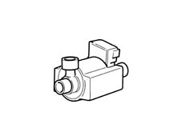

1064B control/safety devices
- Path
- Descriptions > 10 ENGINE > 1064 ENGINE TURBOCHARGING SYSTEM > 1064B control/safety devices
- Kind
- system description
- Applies to
- all engines; all production periods
- Interactive page
- https://sloeber94.github.io/elrnDB-fDbl/en/#/2582316
Applies to: all engines; all production periods
TURBO PRESSURE REGULATION SOLENOID (PIERBURG)
This solenoid, controlled permanently by the control unit, is responsible for direct, continuous control of turbo pressure according to engine rpm and accelerator pedal position.
The control unit also corrects pressure values according to factors such as intake air temperature, knock, barometric pressure and intake manifold pressure.
